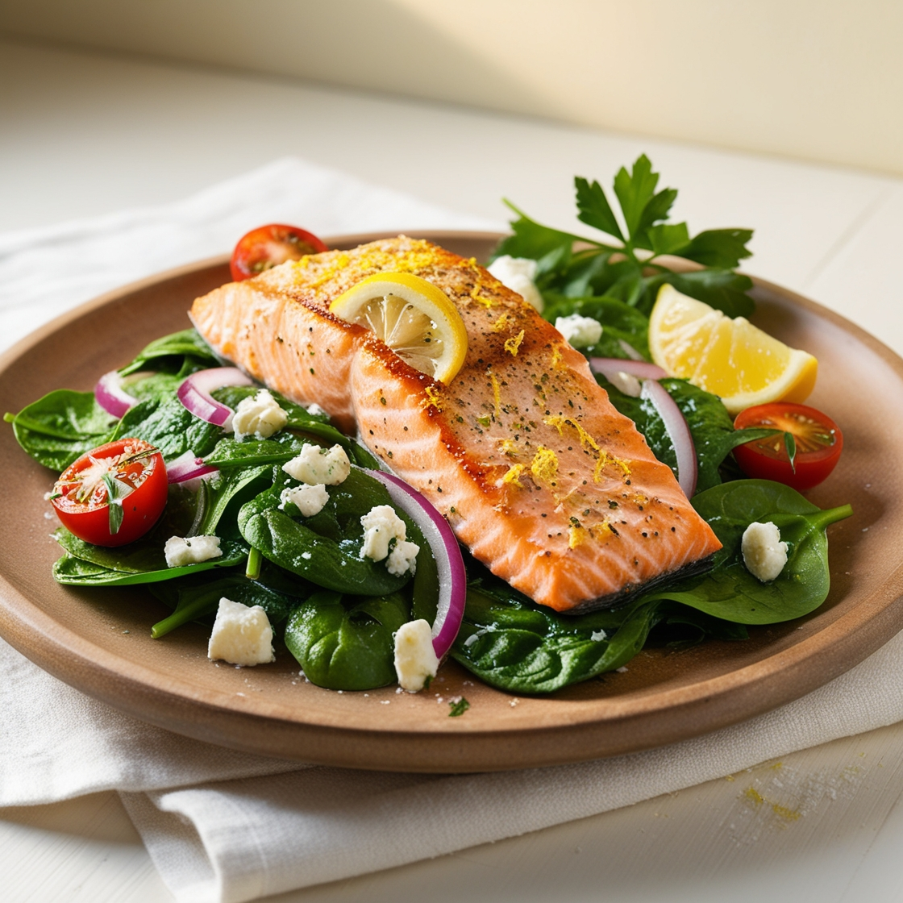
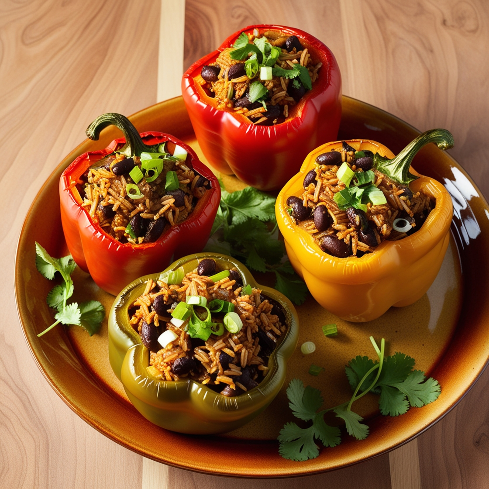
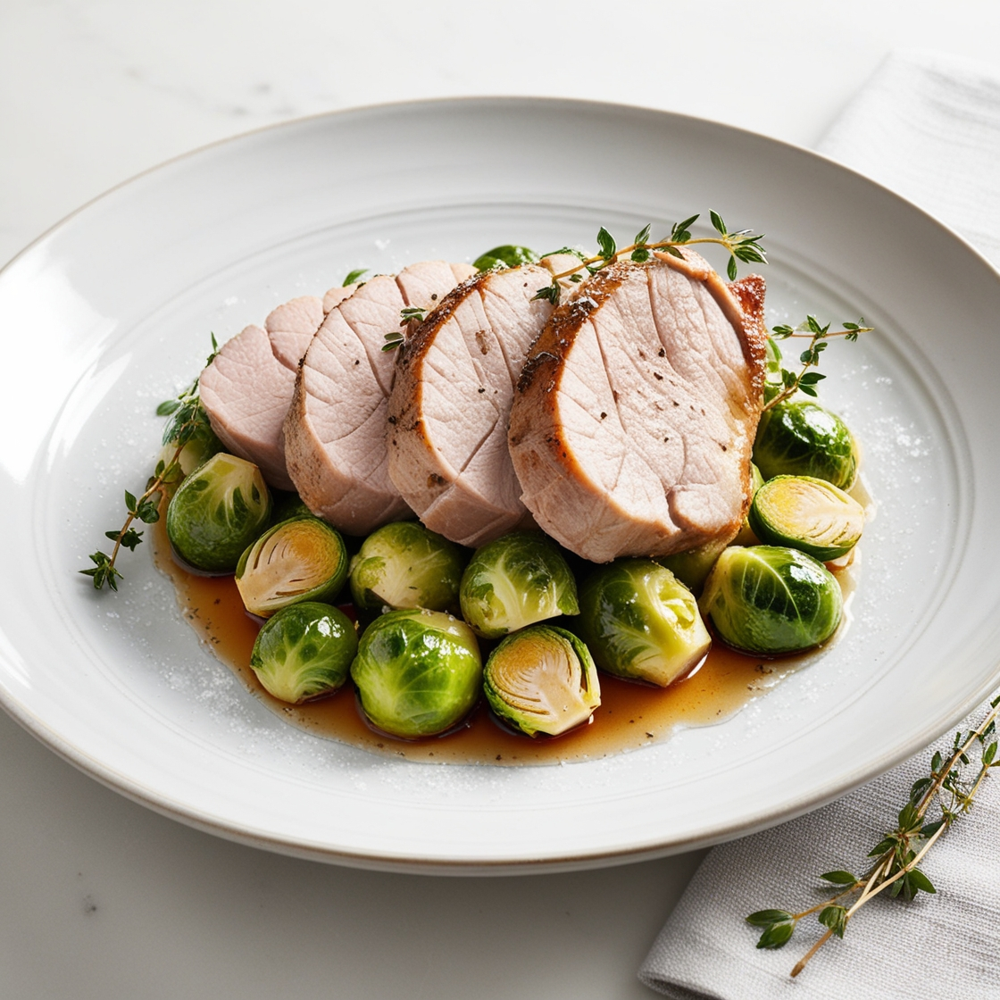
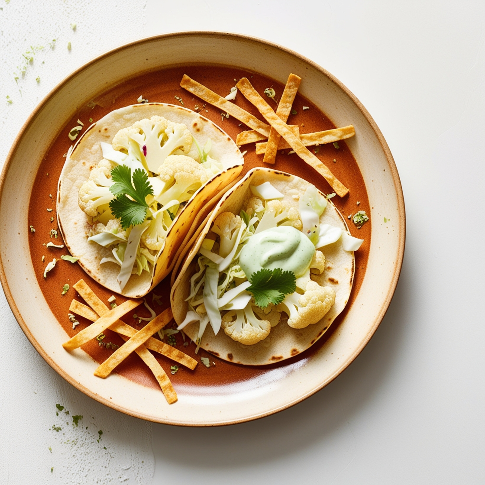
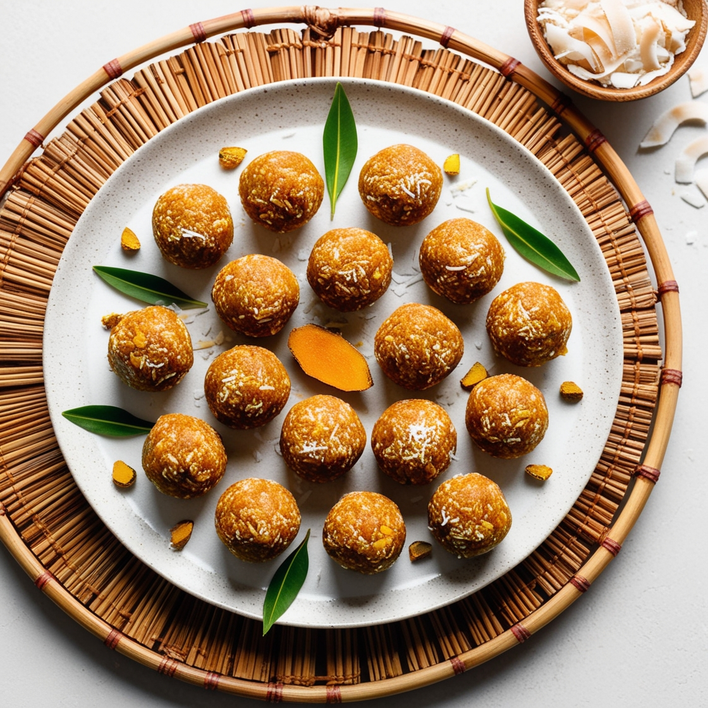
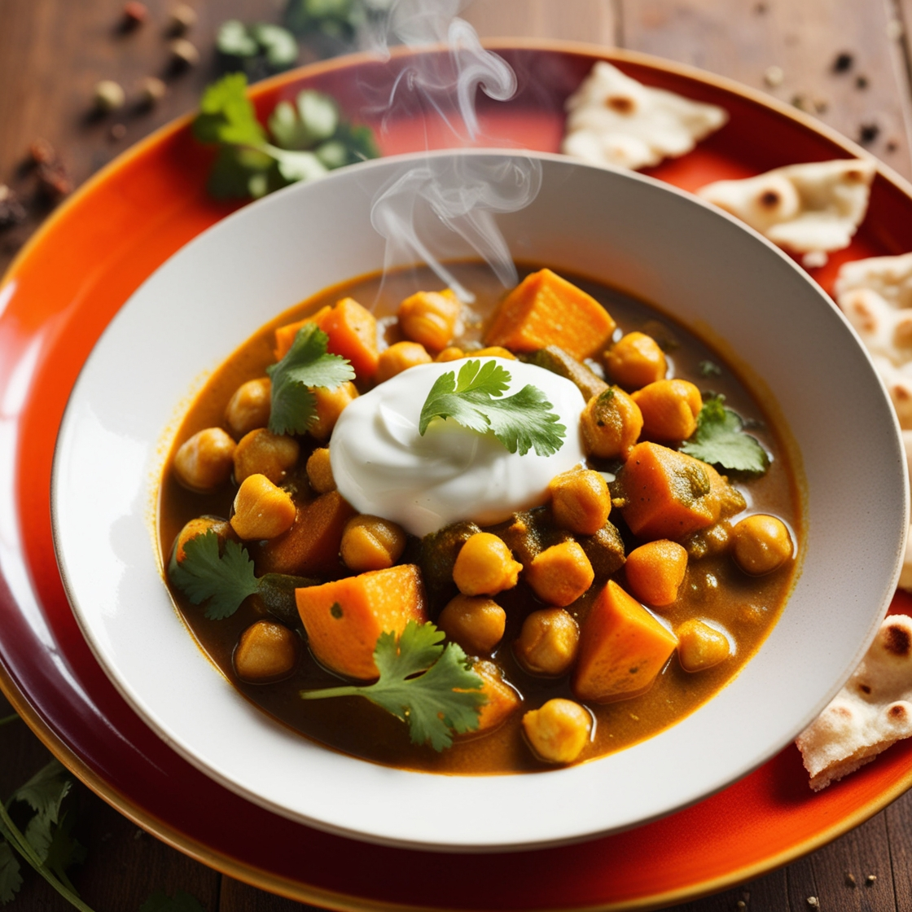
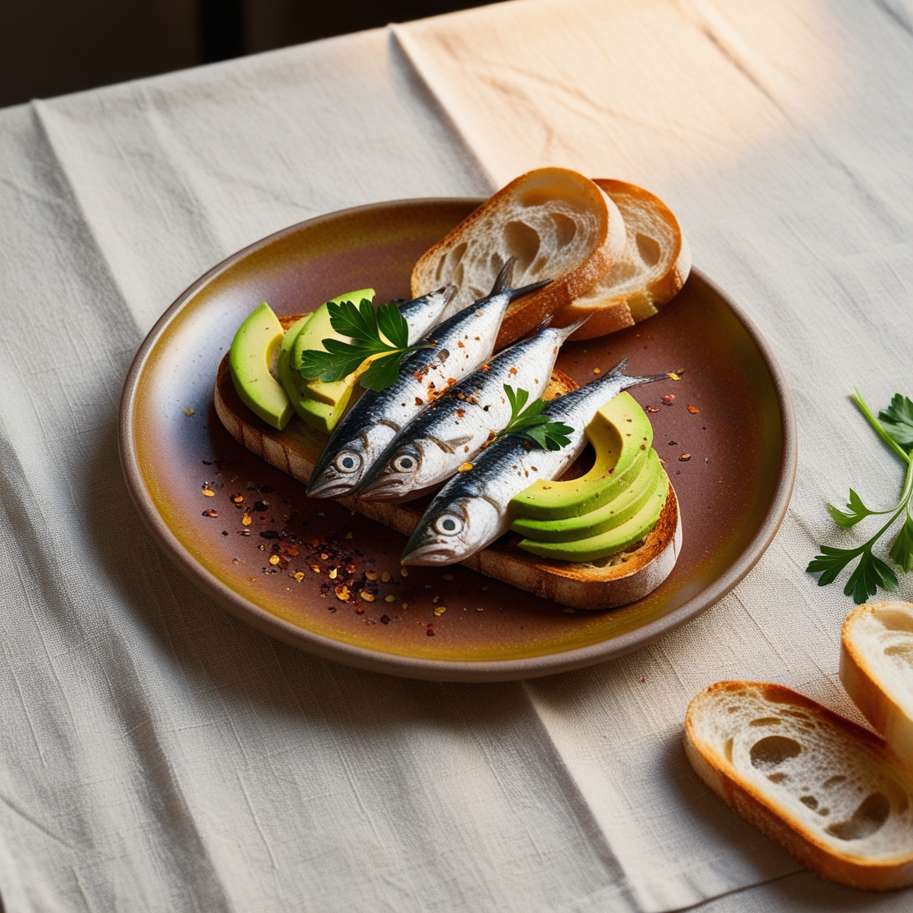
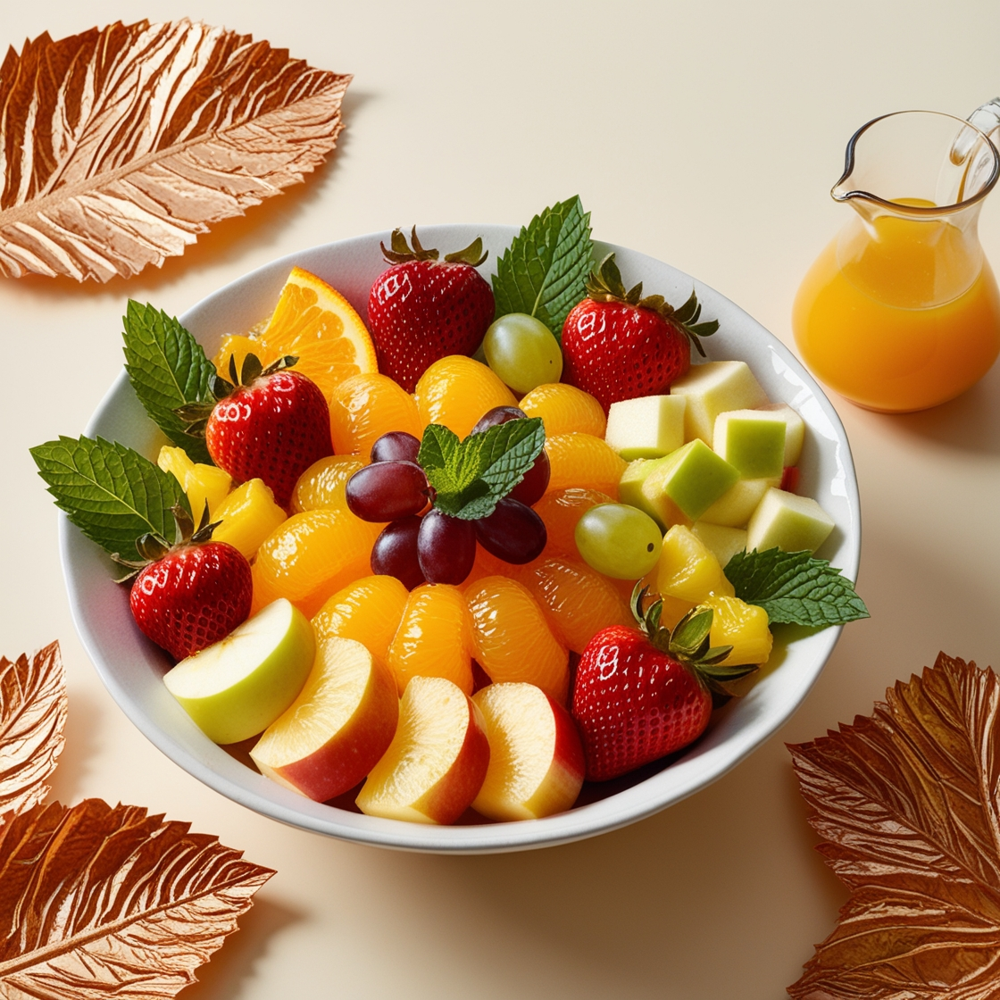

Grilled Salmon with Spinach Salad

Stuffed Bell Peppers with Brown Rice and Black Beans

Pork Tenderloin with Brussel Sprouts

Cauliflower Tacos with Cabbage Slaw
Oatmeal Cookes with Macademia Nuts and Dark Chocolate

Turmeric Coconut Energy Balls

Chickpea & Sweet Potato Curry

Sardine & Avocado Toast

Fruit Salad w/ Citrus Dressing